Project: What does my ISP see? Analyzing Packets. Scenario 2: HTTPS
Scenario 2: HTTPS port 443 browsing. Breakdown:
Overview
HTTPS traffic is encrypted, so the contents of a website should not be seen, nor which particular page of a website were retrieved. We should still expect to see the domains visited, and DNS traffic wont be encrypted so domain queries should be visible.
Setup
I set up a new virtual machine with Linux Ubuntu installed and Firefox in the first scenario. I am continuing to use the same operating system.
I will again look to capture packets from the same Ubuntu host that is browsing to see what exits the local host, from the Linux Mint hypervisor host, and finally on the OPNSense firewall between my router and the ISP ONT to see what exits my home network. I will also examine the Zenarmor NexGen Firewall Plugin live logs to watch for DNS resolution requests and connections.
I expect to see what domains were visited, but not which specific documents were loaded on those domains, nor their content..
Activity on the local host:
The websites used will be https://www.eff.org/issues/free-speech, https://www.eff.org/issues/privacy, and https://ssd.eff.org/ . These sites all use https, have different url paths, and one has a different subdomain. I set all devices to capture traffic, then load these webpages.
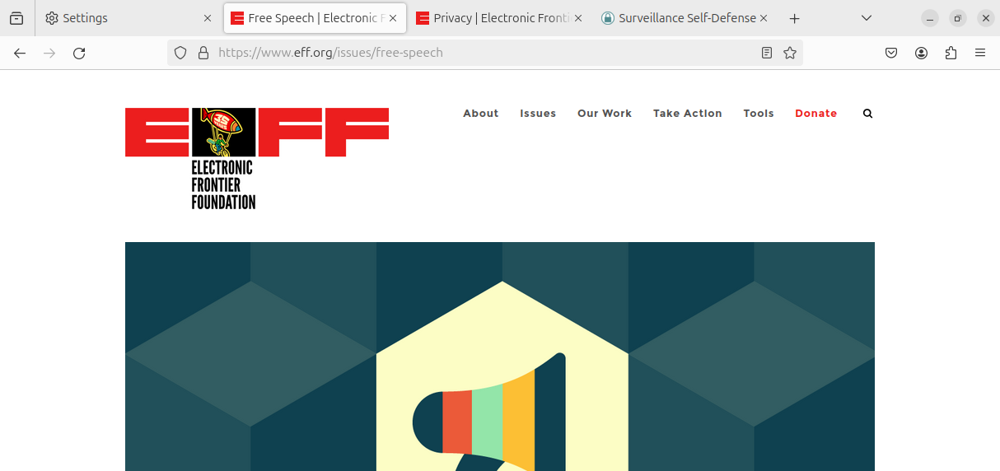 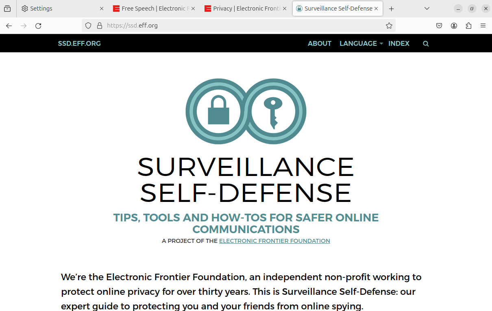 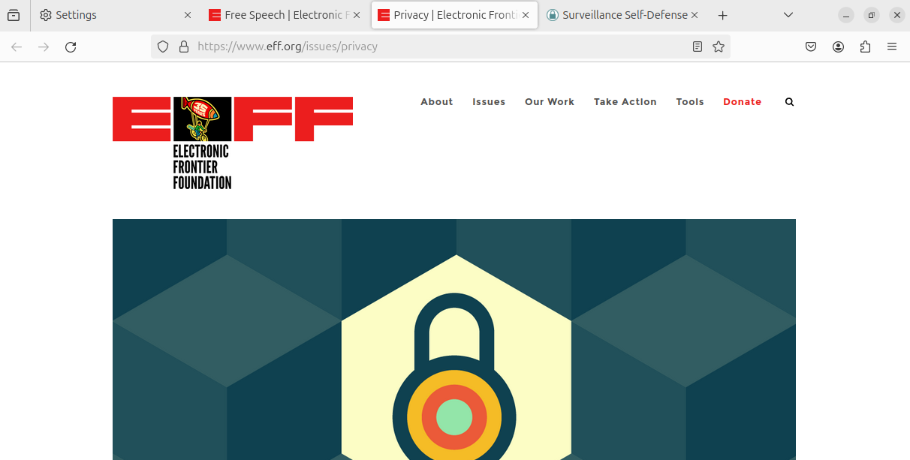I capture all traffic using tcpdump and write it out to a file.
sudo tcpdump -w scenario2httpsubuntu.pcapreading the packet capture file and filtering for port 53 shows all the DNS queries. Listed here is the request to resolve http://www.eff.org and ssd.eff.org
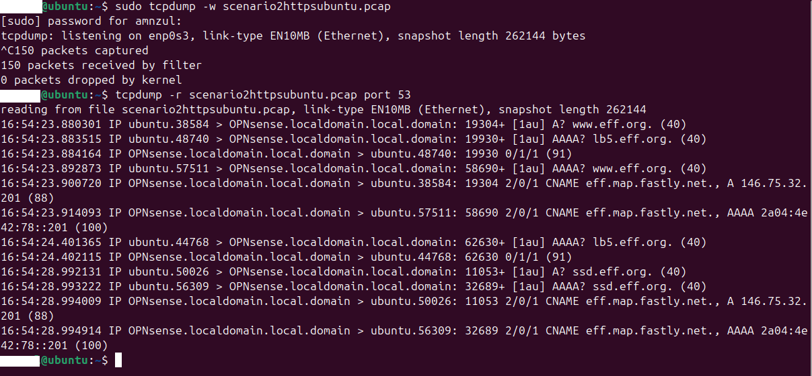Reading the packet capture file again and filtering for port 80 shows all the HTTP traffic. No traffic used port 80. Excellent. As expected its all encrypted with HTTPS. In the last scenario when we looked at HTTP traffic this showed the content of the HTML file.
Reading the packet capture file once more and grepping for the keyword “GET” allowed me to see all the file requests that were requested when using the HTTP protocol. With HTTPS everything beyond the domain name is encrypted. No HTML documents or URLs are visible.
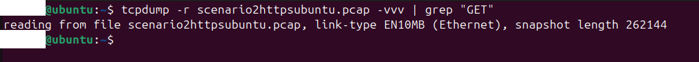Reading the packet capture file and searching for the keyword “HTTPS” only shows a few domain names.
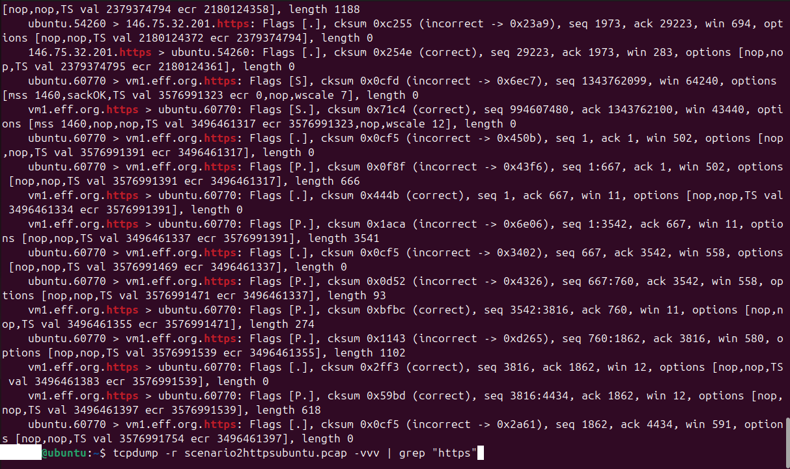HTTPS reduced what we can see from analyzing packets. DNS Requests are visible, but Website URLs, HTML content, etc are not.
Activity seen on the VM’s Host using a Wireshark capture:
The computer running the virtual machine is a Linux Mint PC, and it is also running Wireshark set to capture the same traffic for comparison.
Wireshark is filtering out port 53 to view DNS queries. Some DNS requests show eff.org.
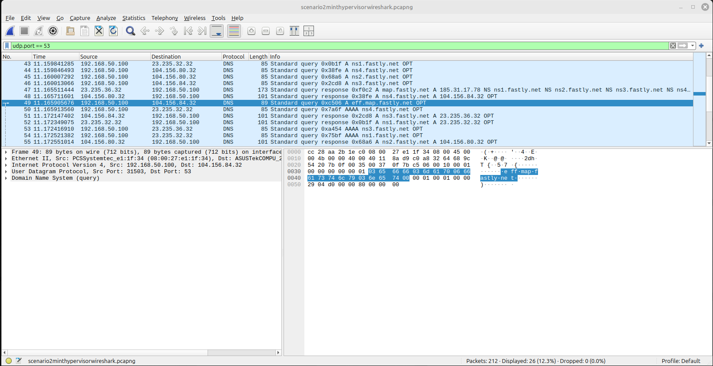Wireshark is filtering port 80 content. No HTTP traffic is available, so we cant see the specific HTML file downloaded from the internet.
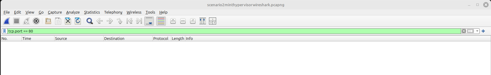Wireshark is now filtering for HTTP content. Again no HTTP traffic was detected, and no HTML files were visible.

Wireshark is filtering for the “eff” keyword. We see just the http://www.eff.org and ssd.eff.org domains in the traffic.
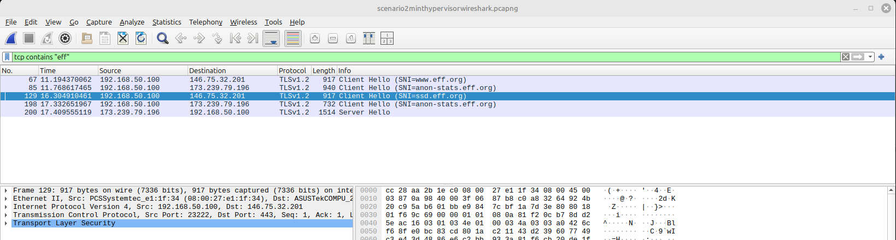Wireshark looking at port 443 shows a lot of traffic on my home network, but only the domain names are unencrypted.
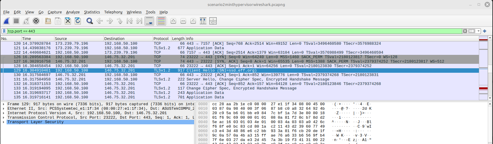DNS requests, and domain names were able to be seen in the traffic but complete website URLs, HTML content, etc, was not.
On the firewall beyond the router:
Inspecting the live logs on the firewall showed similar information.
Zenarmor allowed me to filter for eff.org and just look at the DNS requests on port 53. There were a lot of them!
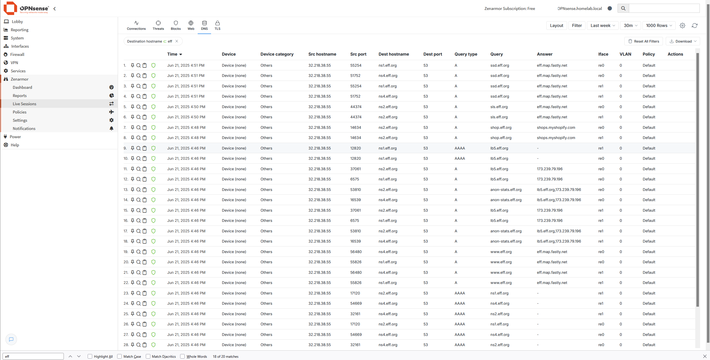Zenarmor shows a a port 80 GET request from eff.org but not what file was transferred. Thats interesting because neither of the other sources showed anything on port 80.
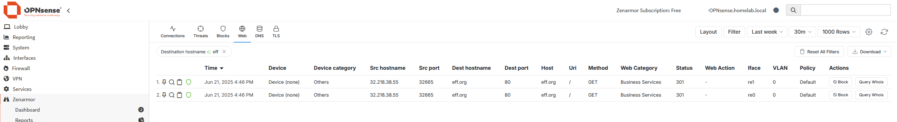We see lots of encrypted connections using port 443 in Zenarmor’s TLS tab, but this only reveals the domain they are connecting to.
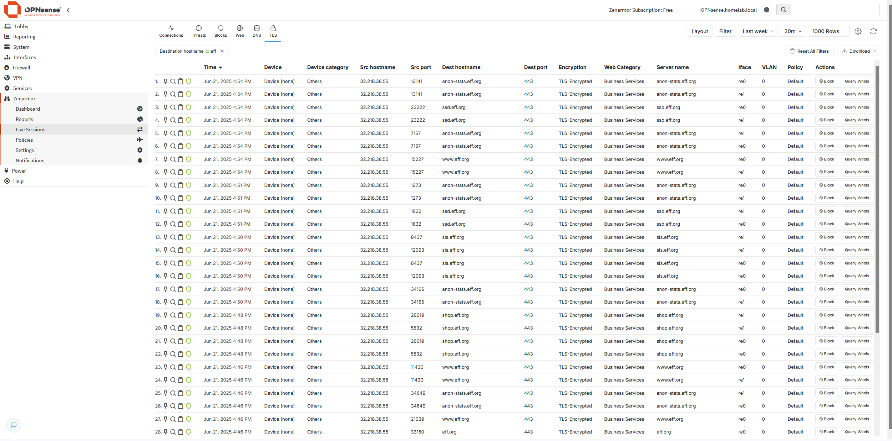I loaded the packet capture from this firewall into Wireshark for further analysis.
Wireshark is filtering out port 53 to view DNS queries. Seen in here is the DNS request for eff.org

Wireshark is filtering port 80 content. Nothing is visible.

Wireshark filtering for HTTP content. There is no content related to the traffic we generated from eff.org

Wireshark is filtering for “eff”. This is the exact same traffic we saw from the previous hop in the transit.

Port 443 traffic as seen in Wireshark again shows a lot of traffic, but nothing discernable beyond domains.

DNS traffic is visible but website URLs, HTML content, etc, are all encrypted at this point.
This is the last hop where I can capture packets. This is the same data that is being seen outside my home network.
Conclusion:
HTTPS encrypted the content of the websites visited, including the URLs and names of HTML files and images. This should prevent usernames and passwords from being exposed, as well as cookies, and query strings.
Using HTTPS my ISP should only be able to see which domains and addresses the computers on my network are communicating with.
Moving from HTTP to HTTPS significantly improves the security of data in transit.
That’s it!